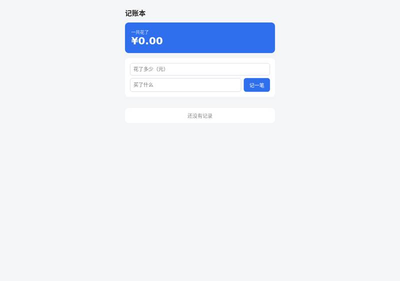
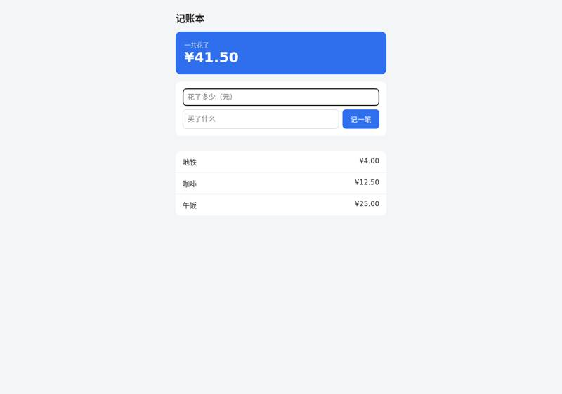
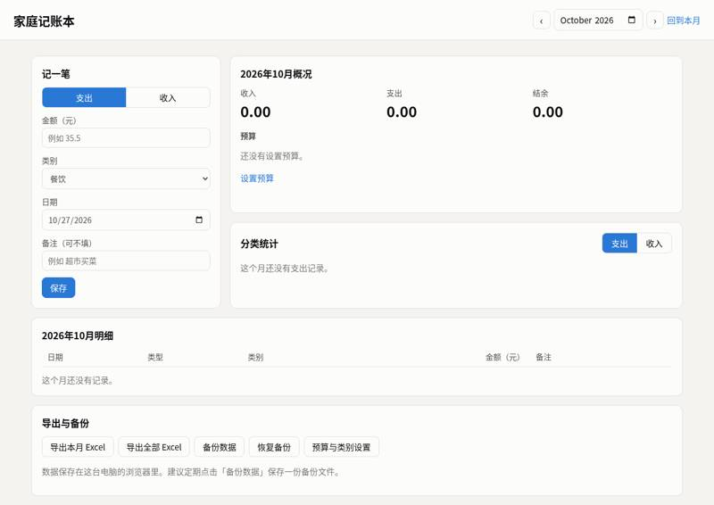
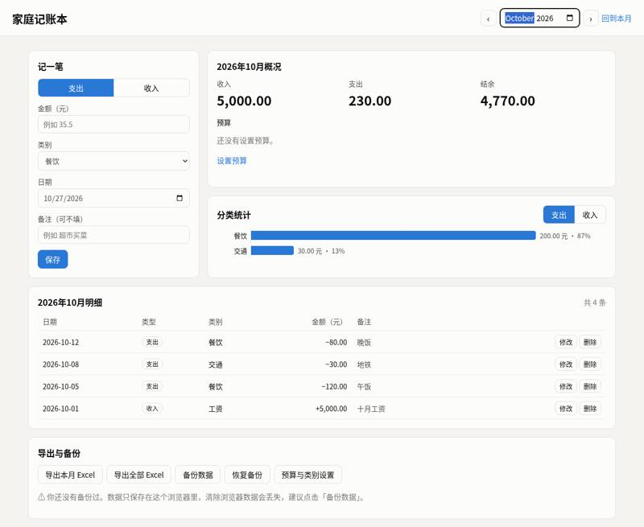
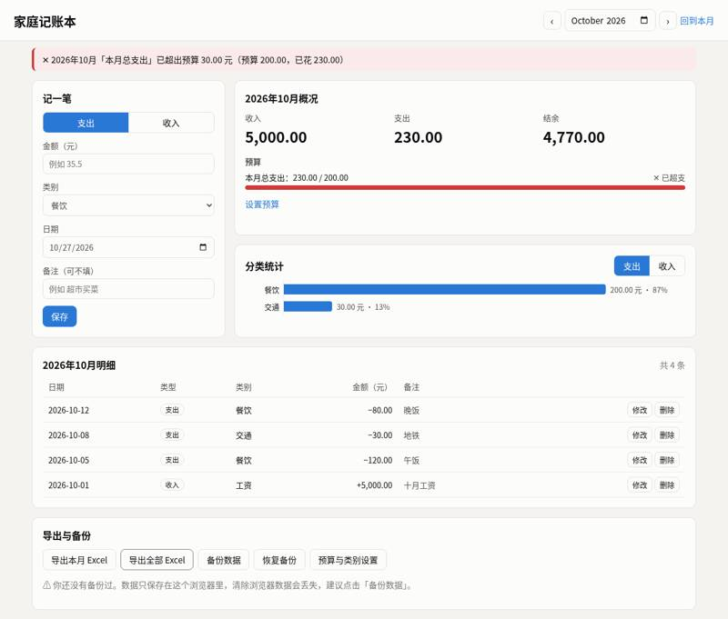
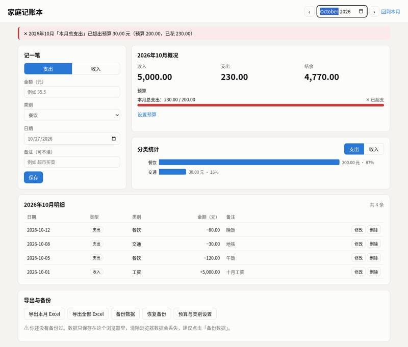

evanklem/evanflow: vibe coding test
Installed from its README in a throwaway sandbox, then used by Claude Code (Claude Opus 5.5) to build two apps from requests written the way someone who cannot code would write them. Whenever the build stopped to ask a question or for approval, it got the same reply. A separate tester session, with no tool loaded, opened each app in a browser and ran the checks; we went through every screenshot. All results · The task · The tester's checks
Install: SETUP: done EvanFlow, copied by hand (README Path 3) because the plugin failed to load (`claude plugin marketplace add ~/src && claude plugin install evanflow@evanflow`, then uninstalled): `cp -r ~/src/skills/* ~/work/.claude/skills/; cp ~/src/agents/*.md ~/work/.claude/agents/; cp ~/src/hooks/block-dangerous-git.sh ~/work/.claude/hooks/ && chmod +x`, hook registered in `~/work/.claude/settings.json` (repo commit c9ae21f8ed0c)
One sentence: an expense page
The request, word for word: 帮我做一个记账小网页：每次花钱记一笔（花了多少、买了什么），页面上能看到一共花了多少，关掉浏览器再打开，记录还在。
Ran: all 4 checks passed. Opens: double-click. Built in 2.8 minutes (limit 30); it stopped to ask 1 time(s); how it ended: finished. Usage at API prices: $0.65 (3.8 times the run with no tool). Packages: none (plain HTML, CSS and JavaScript).
| Check | Verdict | What the tester saw | Screenshot |
|---|---|---|---|
| opens | pass | file:// page shows: '记账本\n一共花了\n¥0.00\n记一笔\n\n还没有记录' |  |
| records an expense | pass | after adding 25/午饭 page shows: '记账本\n一共花了\n¥25.00\n记一笔\n\n午饭\n¥25.00' | |
| total is right | pass | total shown: '¥41.50'; page: '记账本\n一共花了\n¥41.50\n记一笔\n\n地铁\n¥4.00\n咖啡\n¥12.50\n午饭\n¥25.00' |  |
| still there after closing and reopening | pass | after restart total: '¥41.50'; page: '记账本\n一共花了\n¥41.50\n记一笔\n\n地铁\n¥4.00\n咖啡\n¥12.50\n午饭\n¥25.00' |


Where it stopped, and got the reply 「我不懂这些，你按你推荐的来，继续做。」
**第 0 步：确认需求**（EvanFlow 流程的开场） 我理解的是：你想要一个简单的记账网页。每花一笔钱就记下金额和买了什么，页面上显示总共花了多少，关掉浏览器再打开，记录还在。 这个需求比较小，EvanFlow 流程在这里要先问你一个问题再继续： > **要走完整流程，还是走捷径？** > > - **(a) 走捷径**：跳过"头脑风暴"和"写计划"两步，直接动手做，边写边测试。做完我会自检一遍，再交给你。 > - **(b) 走完整流程**：先头脑风暴，给你 2–3 个做法让你挑，再问你几个细节问题（比如要不要能删除记录、金额用什么货币符号）。然后写计划给你批准，最后才动手做。中间你要确认好几次。 请回复 **a** 或 **b**。
One paragraph: a family ledger
The request, word for word: 做一个家庭记账本网页：能记收入和支出（金额、类别、日期、备注），能按月看收入、支出和结余，能看每个类别花了多少（最好有图），可以设每月预算、超了要提醒，还能把记录导出成 Excel 表格。数据存在我电脑上就行。
Ran: all 8 checks passed. Opens: double-click. Built in 24.7 minutes (limit 45); it stopped to ask 3 time(s); how it ended: finished. Usage at API prices: $2.82 (2.7 times the run with no tool). Packages: none (plain HTML, CSS and JavaScript).
| Check | Verdict | What the tester saw | Screenshot |
|---|---|---|---|
| opens | pass | file:// page shows title 家庭记账本, form 记一笔, month 2026-10 |  |
| records income and expenses | pass | October table rows: 2026-10-12 | 支出 | 餐饮 | −80.00 | 晚饭 | 修改删除 ;; 2026-10-08 | 支出 | 交通 | −30.00 | 地铁 | 修改删除 ;; 2026-10-05 | 支出 | 餐饮 | −120.00 | 午饭 | 修改删除 ;; 2026-10-01 | 收入 | 工资 | +5,000.00 | 十月工资 | 修改删除 |  |
| month's income, spending and balance | pass | 2026年10月概况 income/expense/balance = (5000.0, 230.0, 4770.0) |  |
| spending by category | pass | 分类统计 section: 分类统计 支出 收入 餐饮 200.00 元 · 87% 交通 30.00 元 · 13% 2026年10月 |  |
| switches between months | pass | September summary (0.0, 999.0, -999.0), rows ['2026-09-15 | 支出 | 购物 | −999.00 | | 修改删除']; back in October (5000.0, 230.0, 4770.0) (September shot: shots/5-by-month-sep.png) |  |
| warns over budget | pass | Overview budget area: 概况 收入 5,000.00 支出 230.00 结余 4,770.00 预算 本月总支出：230.00 / 200.00 ✕ 已超支 设置预算 | red banner at top of page: ✕ 2026年10月「本月总支出」已超出预算 30.00 元（预算 200.00，已花 230.00）; budget bar turns red. Budget was set via 设置预算 → 预算与类别设置 dialog field 每月总支出预算 = 200 (also offers per-category budgets). | |
| exports a spreadsheet | pass | 家庭记账本-全部-2026-10-27.xlsx (.xlsx) sheets ['明细', '按月汇总']; 9 rows; amounts found {5000: True, 120: True, 30: True, 80: True, 999: True}; rows: [('日期', '类型', '类别', '金额（元）', '备注'), ('2026-09-15', '支出', '购物', 999, None), ('2026-10-01', '收入', '工资', 5000, '十月工资'), ('2026-10-05', '支出', '餐饮', 120, '午饭'), ('2026-10-08', '支出', '交通', 30, '地铁'), ('2026-10-12', '支出', '餐饮', 80, '晚饭'), ('月份', '收入（元）', '支出（元）', '结余（元）'), ('2026-09', 0, 999, -999)] |  |
| still there after closing and reopening | pass | After reopen: October (5000.0, 230.0, 4770.0), rows ['2026-10-12 | 支出 | 餐饮 | −80.00 | 晚饭 | 修改删除', '2026-10-08 | 支出 | 交通 | −30.00 | 地铁 | 修改删除', '2026-10-05 | 支出 | 餐饮 | −120.00 | 午饭 | 修改删除', '2026-10-01 | 收入 | 工资 | +5,000.00 | 十月工资 | 修改删除']; September rows ['2026-09-15 | 支出 | 购物 | −999.00 | | 修改删除'] |  |


Where it stopped, and got the reply 「我不懂这些，你按你推荐的来，继续做。」
**Step 0 — 确认需求：** 你想要一个在自己电脑上用的家庭记账网页：记录收入/支出（金额、类别、日期、备注），按月查看收入、支出、结余，按类别看花费（带图表），设置每月预算并在超支时提醒，还能把记录导出成 Excel。这是一个包含好几个部分的完整功能，所以我会按 EvanFlow 的完整流程来做。 **Step 1 — 用 `evanflow-brainstorming` 梳理需求。** 我会一次只问一个问题，这是第一个： **问题 1：数据"存在电脑上"，你希望是哪种方式？** - **(a) 推荐：存在浏览器里。** 双击 `index.html` 就能用，不用安装任何东西，数据自动保存在这台电脑的浏览器里。我会再加一个"备份/恢复"按钮，把全部数据导出成一个文件，换电脑或清理浏览器之前可以先备份。 - **(b) 存成你电脑上的一个数据文件。** 需要先运行一条命令启动一个小程序，再在浏览器里打开。数据文件看得见、好备份，但每次使用前都要先启动。 - **(c) 只用 Excel 文件。** 每次打开网页时导入 Excel，用完再导出保存。不需要安装，但每次都要手动导入、导出，容易忘记保存。 请回复 a、b 或 c（也可以补充你的想法）。
好的，我按推荐方案来：**数据保存在浏览器里，双击 `index.html` 就能用，另外提供"备份/恢复"按钮。** 其余细节我也按推荐的做法定好了，下面是完整设计。 EvanFlow 规定写代码之前必须由你明确确认设计，所以需要你看一眼，回复一句就行。 --- ## 设计方案 **1. 记一笔** - 先选"支出"或"收入"，再填金额、类别、日期（默认今天）、备注（可以不填）。 - 预设类别： - **支出：** 餐饮、买菜、交通、住房、水电燃气、通讯、购物、医疗、教育、娱乐、人情往来、其他 - **收入：** 工资、奖金、理财、兼职、其他 - 你也可以自己添加新类别。 - 记错了可以修改或删除。 **2. 月度总览** - 页面顶部选择月份（可以前后翻月）。 - 显示本月的**收入、支出、结余**三个大数字，下面列出本月的全部明细。 **3. 分类统计（带图）** - 本月每个支出类别花了多少钱、占总支出的百分比，用一张横向条形图展示，从高到低排列。 **4. 每月预算和超支提醒** - 可以设置每月总预算，也可以给单个类别设预算（不设也没关系）。 - 用进度条显示预算用了多少。 - 用到 80% 时显示黄色提醒，超过预算时显示红色警告。 - 如果新记的一笔导致超支，会立刻弹出提示。 **5. 导出 Excel** - 一键下载真正的 `.xlsx` 文件，Excel 和 WPS 都能直接打开。 - 文件里有两张表：「明细」和「分类汇总」。 - 可以选择导出当前月份或全部记录。 **6. 备份 / 恢复** - 把全部数据保存成一个备份文件，需要时再导回来。 - 用于换电脑、清理浏览器之前，防止数据丢失。 --- ## 已按推荐方式确定的几点 - **不需要联网**，也不需要安装任何东西，所有功能都打包在网页里。 - **金额按"分"精确计算**，不会出现 0.1 + 0.2 ≠ 0.3 这类小数误差。 - **有一个风险：** 如果清除了浏览器数据，记录会丢失。所以页面会提醒你定期备份，并显示上次备份的时间。 - **这次不做的功能：** 多人同时使用或手机同步、登录账号、自动记账（比如每月固定扣款）、多种货币。 --- **这个设计可以吗？** 回复"可以"我就进入下一步，写实施计划；如果想改哪里，直接告诉我。
**Step 2：用 `evanflow-writing-plans` 写实施计划。** 计划已经写好，保存在 `docs/plans/2026-10-27-family-ledger.md`。 **计划概要：** 1. **计算部分：** 先写金额、月度汇总、分类统计、预算判断、备份这些计算逻辑。每一项都先写自动测试，再写代码。 2. **Excel 导出部分：** 自己实现生成 `.xlsx` 文件的功能，不依赖网络，同样先写测试。 3. **网页界面：** 最后做页面本身，包括表单、月份切换、图表、预算提醒、导出和备份按钮。做完后用浏览器截图检查效果。 4. **执行方式：** 按顺序一步一步做。可以同时进行的独立部分只有两个，所以不需要分给多个助手并行。 成品会放在 `~/work/output/`，双击 `index.html` 就能打开。 EvanFlow 规定开始写代码前，需要你确认这份计划。**回复"可以"我就开始做**，做完之前不会再问你问题。